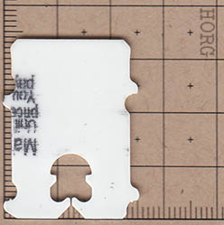
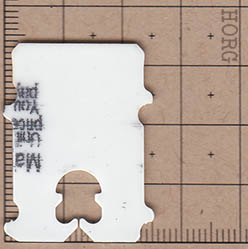
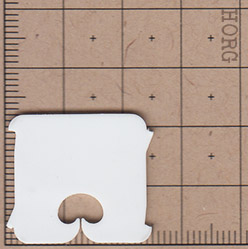
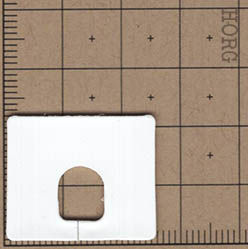
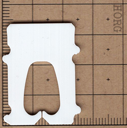
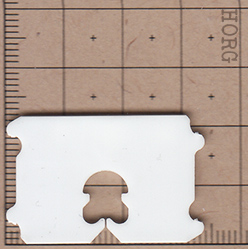
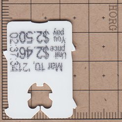
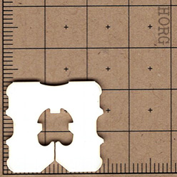
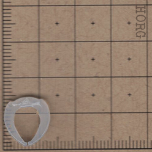
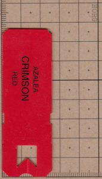

All my favorite panids!!

P. Colwelli is my favorite panid of all time. It was the first panid I have ever collected! It is held in a special place in my heart <3

P. Colwelli is my favorite panid of all time. It was the first panid I have ever collected! It is held in a special place in my heart <3

A. phaseolus was first recived by me when a very nice wegmans employee, and for that reason I kinda love this panid. She was so nice and gave me multiple because she was about to throw away the english muffins that A. phaseolus was parasitizing on!

E. veterinarius. It is square, silly, and animal related. Who wouldn't like this panid! It is so weird looking! One of my favorites because I want to be a veterinarian in the future and also because it looks weird!

I. Asymmetrica has such a unique body shape. I love how it looks like no other panid. I also love how it comes in boxes shaped like the panid itself and has a lopsided oral groove! It is so weird to look at, why didn't they just make it into a full circle? why didn't they give it any palps? One palp on either side would be smarter than no palps!

THE ME PANID! NAMED AFTER ME! WHY WOULDN'T I LOVE THIS PANID?! 1. NAMED AFTER ME, 2. LOOKS FUNKY, AND 3. IS RARE AND A PLANOTECTIDAE! BELOVED PANIIIDDDDDDD YAYYY

Widealicious Wide boi. The beloved "wide boi" speaks for itself. It looks dumb, and also looks like another panid but just w i d e .

ANGRY COLWELLI!!!! MY BELOVED COLWELLI, BUT MEAN. AMAZING. NEEDS AN AWARD. ITS COLWELLI, BUT NOT COLWELLI, SO THERES MORE DIFFRENT NEW COLWELLIS. YES. AMAZING. NEED MORE. NEED MANY. NEED THOUSANDS.

The spicy square is so spicy. So spiky too! Trust the spicy square to not hurt horibly when stepped on or not, we can all agree its spikes, centered oral groove, and square body shape is what makes it special and oh so cool. The emo panid. Imagine a black one lol

Botulicornis waldorfensis IS KING BRAH, My first ever panid :DD BLA BLA BLA BLA BLA is of course not a true panid, but a surprising one! Clear, c-shaped, mysterious, and its host always holds one meat product or another. An intriguing psuedo panid discover, with so much more to learn!

Long texas boi! From texas! Which is for sure the best state. Whataburger, HEB, Buc-ee's, and more!! This psuedo panid captivates me, its sharp fighter-jet like appearance when compared to other panids just make it plain COOL !
Made by fooxxo.